Процессы обработки речи в стандарте GSM направлены на обеспечение высокого качества передаваемых сообщений, реализацию дополнительных сервисных возможностей и повышение потребительских качеств абонентских терминалов [1,16].
Обработка речи осуществляется в рамках принятой системы прерывистой передачи речи (DTX), которая обеспечивает включение передатчика только тогда, когда пользователь начинает разговор и отключает его в паузах и в конце разговора. DTX управляется детектором активности речи (VAD), который обеспечивает обнаружение и выделение интервалов передачи речи с шумом и шума без речи даже в тех случаях, когда уровень шума соизмерим с уровнем речи. В состав системы прерывистой передачи речи входит также устройство формирования комфортного шума, который включается и прослушивается в паузах речи, когда передатчик отключен. Экспериментально показано, что отключение фонового шума на выходе приемника в паузах при отключении передатчика раздражает абонента и снижает разборчивость речи, поэтому применение комфортного шума в паузах считается необходимым. DTX процесс в приемнике включает также интерполяцию фрагментов речи, потерянных из-за ошибок в канале.
Качество воспроизведения, как показывает практика, существенно зависит от скорости кодирования речи (рис.4.1).
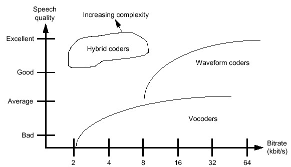
Рис.4.1 Зависимость качества речи от скорости кодирования
Основным методом уменьшения скорости битового потока, представляющего собой закодированную речь, является передача информации о речи, а не самой речи, то есть в системе GSM непосредственно речевые сигналы не передаются. Вместо речи предаются параметры речи: тон (частота речевого сигнала), продолжительность конкретного тона, высота звука (уровень речевого сигнала). Параметры речи после их генерации передаются через сеть к другой MS, которая воспроизводит речь по полученным параметрам речи.
Процесс сегментации и речевого кодирования осуществляется в следующей последовательности. Воспроизведение человеческой речи начинается с вокального аккорда, производимого генерирующим тональные сигналы речевым органом. Такие речевые органы как рот, язык, зубы и т.д. работают как фильтр, изменяя природу данного тона. Цель речевого кодирования в системе GSM заключается в передачи только информации об оригинальном тоне и о фильтрах.
Поскольку речевые органы являются достаточно инерционными, параметры фильтра, представляющего речевые органы, остаются постоянными в течение минимум 20 мсек. В связи с этим при речевом кодировании в системе GSM используется блочное кодирование с длительностью каждого блока в 20 мсек (рис.4.2).
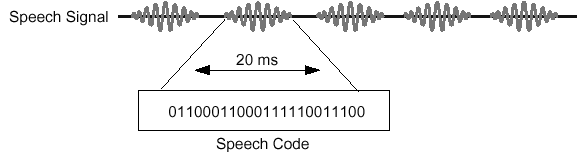
Рис.4.2 Сегментация и речевое кодирование
Кодирование осуществляется одним набором битов. На самом деле данный процесс похож на оцифровку речи с частотой 50 раз в секунду вместо 8000, как это используется при стандартном аналого-цифровом преобразовании.
Речевое кодирование (Speech Coding).Вместо использования кодирования последовательностью из 13 битов, применяемого в аналого-цифровом преобразовании, в речевом кодировании используется кодирование последовательностью из 260 битов. Следовательно, общая скорость передачи информации о речи составляет 50*260 = 13 кбит/сек. Данное кодирование обеспечивает удовлетворительное качество речи, которое приемлемо в мобильной телефонии и сравнимо с качеством проводных линий сетей общего пользования PSTN.
В настоящее время существует множество различных речевых кодеров. Некоторые кодеры являются высококачественными с большей скоростью кодирования (waveformcoders – кодирование формы сигнала). Некоторые кодеры обладают низким качеством, но обеспечивают меньшую скорость кодирования (vocoders). В системе GSM используются гибридные кодеры (HybridCoders), которые обеспечивают удовлетворительное качество речи при относительно малой скорости кодирования.
Речевой GSM кодер осуществляет кодирование со скоростью 13 кбит/сек для одного абонента. Следовательно, 8 абонентов при использовании одной несущей будут обслуживаться со скоростью 8*13 кбит/сек = 104 кбит/сек. Оптимальность такого метода кодирования особенно заметна при сравнении с кодированием при аналого-цифровом преобразовании со скоростью 832 кбит/сек.
Однако речевое кодирование не защищает передаваемую информацию от искажения и ошибок при её передаче через радиоэфир. Для защиты речи от этих негативных явлений используются другие методы:
канальное кодирование;
перемежение (интерливинг).
Канальное кодирование (Channel Coding).Канальное кодирование в системе GSM использует 260 бит, получаемых после речевого кодирования, как входную величину, и преобразует в последовательность состоящую из 456 бит (рис.4.3) [14,16].
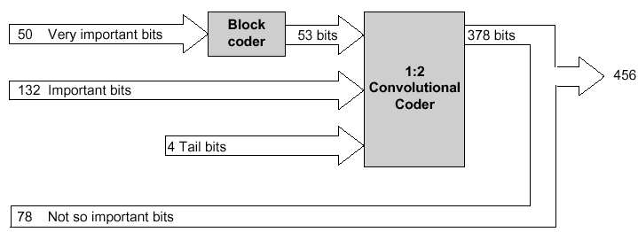
Рис.4.3. Канальное кодирование
260 бит информации распределяются согласно их относительной важности:
Блок 1: 50 бит – очень важные биты;
Блок 2: 132 бит - важные биты;
Блок 3: 78 бит – не очень важные биты.
Первый блок, состоящий из 50 бит, передаётся через кодер (устройство блочного кодирования), который добавляет ещё 3 бита для проверки четности, следовательно, получается последовательность из 53 битов. Эти 3 бита предназначаются для обнаружения ошибок в принимаемом сообщении.
После блочного кодирования 53 бита первого блока и 132 бита второго блока плюс 4 хвостовых бита (в общем 189 бит) передаются в свёрточный кодер 1:2, на выходе которого получается 378 бит информации. Добавленные биты при свёрточном кодировании позволяют исправлять ошибки при приёме сообщений.
Остальные же биты третьего блока не защищены.
В результате на выходе кодера получаем следующие сигналы (рис.4.4).
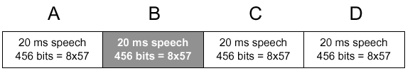
Рис.4.4. Речевой кадр
Перемежение (Interleaving). Первый уровень перемежения[1,16]. Следует отметить, что канальный кодер осуществляет кодирование последовательностью из 456 битов для каждых 20 мсек. речи. После этого осуществляется интерливинг, в результате чего формируется 8 блоков по 57 бит каждый (рис.4.5).
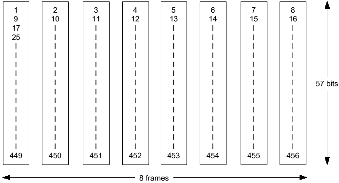
Рис.4.5. Интерливинг кодированной речи в интервале 20 мсек
Как показано на рис.4.6 в обычном пакете (normalburst) есть пространство для двух таких речевых блоков (по 57 бит). Назначение остальных битов рассмотрим ниже. Таким образом, если один из этих блоков теряется, это будет соответствовать 25% BER внутри интервала речи продолжительностью 20 мсек. (2/8 = 25%).
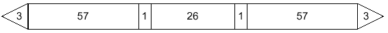
Рис.4.6Normalburst (обычный интервал)
Второй уровень интерливинга. Как указывалось выше, при первом уровне интерливинга результирующие потери составляют 25%. Последнее слишком велико для осуществления корректировки в канальном кодере. Введение второго уровня интерливинга позволяет снизить BER до 12.5 % (рис.4.7).
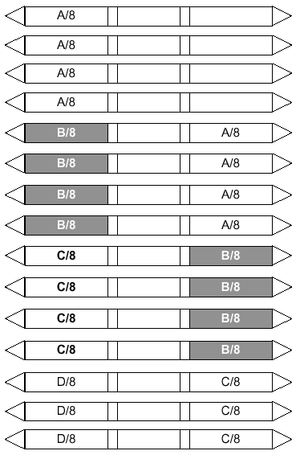
Рис.4.7. Второй уровень интерливинга
Здесь, вместо передачи двух блоков по 57 бит речевого сообщения для интервала 20 мсек. внутри одного пакета, система передаёт один блок информации из одного 20 миллисекундного речевого сообщения и один блок информации из другого 20 миллисекундного речевого сообщения вместе. Такая одновременная передача организует в системе задержку в 20 мсек., вследствие чего MS должна ждать следующие 20 мсек. речи. Однако система при потере всего пакета (burst) теряет только 12.5% бит каждого временного кадра. Последнее хорошо исправляется канальным кодером.
Шифрование (Ciphering/Encryption).Цель шифрования заключается в зашифровке речевого пакета (burst) таким образом, чтобы никто другой не смог расшифровать данное сообщение при использовании различных внешних декодеров. Алгоритм шифрования в системе GSM называется алгоритмом А5 (рис.4.8) [1,16].
При шифровании в передатчике информация из открытой (незашифрованной) преобразуется в закрытую (зашифрованную) по определенному алгоритму шифрования с применением секретного ключа, причем, чем больше размер секретного ключа в битах, тем труднее будет злоумышленнику взломать шифрованную посылку (расшифровать данные), перехваченную из канала передачи. Размер секретного ключа определяется алгоритмом шифрования, степенью защищенности и трудоемкостью процедуры шифрования. При условии, что на приеме известен алгоритм шифрования и секретный ключ, информация из закрытой преобразуется в открытую (дешифрируется).
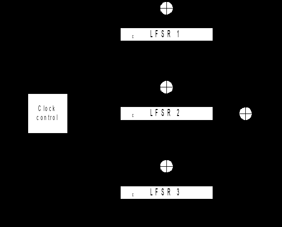
Рис.4.8. Схема шифрования А5
В стандарте GSM 900 для реализации шифрования применяется схема шифрования А5, построенная на трех сдвиговых регистрах LFSR 1, LFSR 2 и LFSR 3 длиной по 19, 22 и 23 бита соответственно. Секретный ключ для схемы шифрования А5 составляет 64 бита.
Процесс шифрования происходит следующим образом:
1. Секретный ключ помещается в три сдвиговых регистра LFSR 1, LFSR 2 и LFSR 3 таким образом, что его старшие биты с 64 по 46 оказываются в регистре LFSR 1, биты с 45 по 24 - в регистре LFSR 2 и биты с 23 по 1- в регистре LFSR 3 соответственно.
2.По приходу синхроимпульса CLK от тактового генератора происходит следующее:
• Вычисляется выход логической схемы 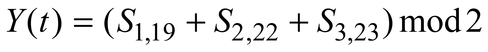 (сумма по модулю 2 битов 19, 22 и 23 сдвиговых регистра LFSR 1, LFSR 2 и LFSR 3 соответственно);
• из сдвиговых регистров считываются биты: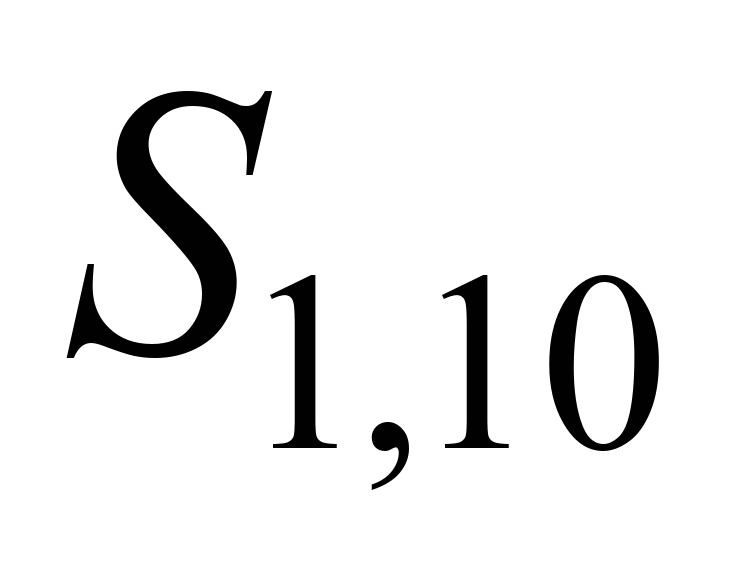-10-ый бит регистра LFSR1, 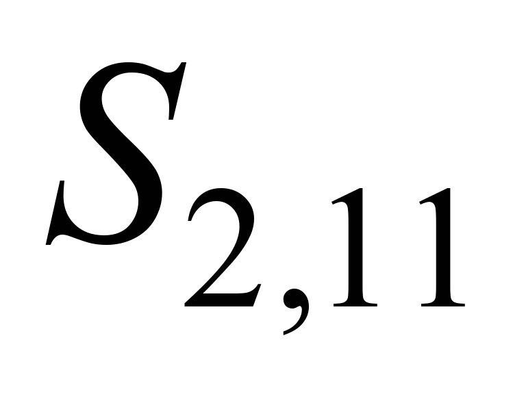- 11-ый бит регистра LFSR 2 и 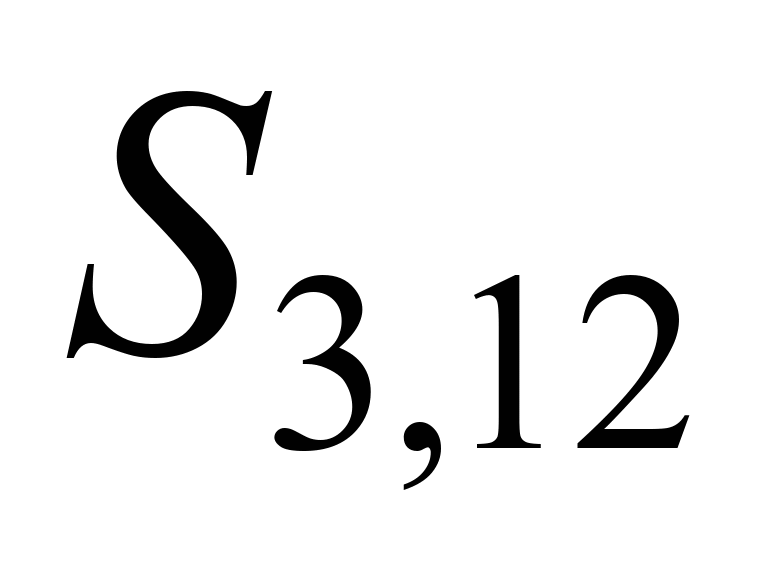 -12-ый бит регистра LFSR 3;
• если = =, то производится сдвиг во всех трех регистрах, причем первым элементом регистра становится сумма по mod2 последнего битарегистра и считанного из середины бита.
• если из трех битов , и равны только два (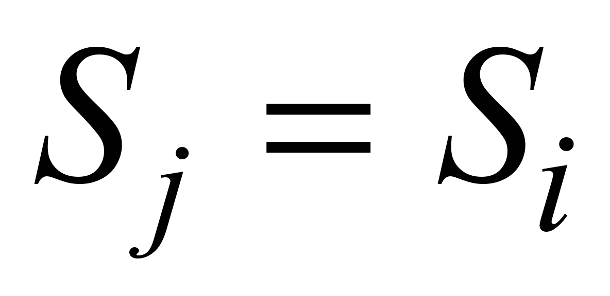), то сдвиг происходит только в этих двух регистрах LFSR j и LFSR i соответственно.
• возвращение к началу пункта 2 произойдет только после того, как все его действия не будут повторены 192 раза. Если все действия пункта 2 выполнены 192 раза- происходит переход к пункту 3.
Из полученных на выходе логической схемы 192 бит берутся 92 последних бита. Они дополняются 22 битами открытого ключа, в которые записывается двоичный номер кадра. Сумма 92 и 22 бит образует специфическую ключевую комбинацию.
Осуществляется перевод 144 битового кадра стандарта GSM 900 с открытой информацией в 144 битовый кадр с закрытой информацией.
С этой целью над 144 битами информации (одним кадром) и 144 битами специфической ключевой комбинации выполняется логическая операция XOR. Результатом применения булевой операции является зашифрованный (закрытый) информационный кадр.
Процесс дешифрации абсолютно аналогичен процессу шифрации с той лишь разницей, что логическая операция XOR выполняется над зашифрованным (закрытым) информационным кадром и полученной все тем же образом, но уже в приемнике, специфической кодовой комбинации, состоящей из 92 битов секретной кодовой комбинации и 22 битов открытого ключа с номером кадра.
Форматирование пакета (Burst Formatting). Как указывалось выше, каждая передача информации от MS/BТS содержит излишнюю информацию (тестовую последовательность). Процесс форматирования пакета заключается в добавлении этих битов (среди которых имеются хвостовые биты) к основной передаваемой информации, увеличивая тем самым скорость (bit rate) кодирования, но в то же самое время решая проблемы, возникающие при передаче информации через радиоэфир.
В системе GSM входной информацией для форматирования пакета является шифрованная информация объемом в 456 бит. Процедура форматирования пакета добавляет ещё 136 бит на блок из 20 мсек., в общем преобразуя исходное сообщение в результирующее сообщение объемом 592 бит.
Однако продолжительность каждого временного интервал кадра TDMA составляет 0.577 мсек. Следовательно, имеется возможность передать 156.25 бит информации (передача каждого бита занимает 3.7 мксек.), но пакет содержит только 148 бит. Свободное пространство в 8.25 бит является пустым и называется защитным периодом (GuardPeriod - GP). Данный период времени дает возможность MS/BТS осуществить процедуру “rampup” , “rampdown”. Rampup означает получение питание от батареи или от источника питания MS для передачи сигналов. Процедура Rampdown осуществляется после каждой передачи, и необходима для того, чтобы убедиться, что MS не использует энергию батареи в течение временного интервала, занятого другой MS.
После форматирования пакет состоит из 156.25 бит (для одного пакета) или 625 бит (в четырех пакетах) для речевого отсчета продолжительностью 20 мсек. Однако для того, чтобы настроить модулятор, с двух сторон пакета доступа используются несколько пустых битов. Это увеличивает объем сообщения до 676 бит для каждого речевого отсчета в 20 мсек. При использовании одной несущей в кадре TDMA кадре для организации связи одновременно для 8 абонентов общая скорость битов для системы GSM составляет 270.4 кбит/сек.
Детектор активности речи(VAD) играет решающую роль в снижении потребления энергии от аккумуляторной батареи в портативных абонентских терминалах. Он также снижает интерференционные помехи за счет переключения свободных каналов в пассивный режим. Реализация VAD зависит от типа применяемого речевого кодека. Главная задача при проектировании VAD - обеспечить надежное отличие между условиями активного и пассивного каналов. Если канал на мгновение свободен, его можно заблокировать, поскольку средняя активность речи говорящего ниже 50%, то это может привести к существенной экономии энергии аккумуляторной батареи. К устройствам VAD предъявляются следующие основные требования [17,18]:
- минимизация вероятности ложной тревоги при воздействии только
шума свысоким уровнем;
высокая вероятность правильного обнаружения речи низкого уровня;
высокое быстродействие распознавания речи, для исключения задержек включения;
минимальное время задержки выключения.
В стандарте GSM принята схема VAD с обработкой в частотной области. Структурная схема VAD приведена на рис.4.9.
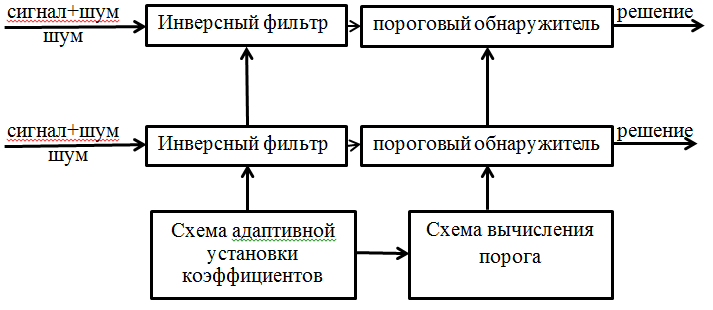
Рис.4.9. Структурная схема VAD
Ее работа основана на различии спектральных характеристик речи и шума. Считается, что фоновый шум является стационарным в течение относительно большого периода времени, его спектр также медленно изменяется во времени. VAD определяет спектральные отклонения входного воздействия от спектра фонового шума. Эта операция осуществляется инверсным фильтром, коэффициенты которого устанавливаются применительно к воздействию на входе только фонового шума. При наличии на входе речи и шума инверсный фильтр осуществляет подавление компонентов шума и, в целом, снижает его интенсивность. Энергия смеси сигнал + шум на выходе инверсного фильтра сравнивается с порогом, который устанавливается в период воздействия на входе только шума. Этот порог находится выше уровня энергии шумового сигнала. Превышение порогового уровня принимается за наличие на входе реализации (сигнал+шум). Коэффициенты инверсного фильтра и уровень порога изменяются во времени в зависимости от текущего значения уровня шума при воздействии на входе только шума. Поскольку эти параметры (коэффициенты и порог) используются детектором VAD для обнаружения речи, сам VAD не может на этой же основе принимать решение, когда их изменять. Это решение принимается вторичным VAD на основе сравнения огибающих спектров в последовательные моменты времени. Если они аналогичны для относительно длительного периода времени, предполагается, что имеет место шум, икоэффициенты фильтра и шумовой порог можно изменять, то есть адаптировать под текущий уровень и спектральные характеристики входного шума [17,18].
VAD с обработкой в спектральной области удачно сочетается с речевым RPE/LTP-LPC коде-ком, так как в процессе LPC анализа уже определяется огибающая спектра входного воздействия, необходимая для работы вторичного VAD.
Экстраполяция потерянного речевого кадра. В условиях замираний сигналов в подвижной связи речевые фрагменты могут подвергаться значительным искажениям. При этом для исключения раздражающего эффекта при воспроизведении необходимо осуществлять экстраполяцию речевого кадра.
Было установлено, что потеря одного речевого кадра может быть значительно компенсирована путем повторения предыдущего фрагмента. При значительных по продолжительности перерывах в связи предыдущий фрагмент больше не повторяется, и сигнал на выходе речевого декодера постепенно заглушается, чтобы указать пользователю на разрушение канала.То же самое происходит и с SID кадром. Если SID кадр потерян во время речевой паузы, то формируется комфортный шум с параметрами предыдущего SID кадра. Если потерян еще один SID кадр, то комфортный шум постепенно заглушается.
Применение экстраполяции речи при цифровой передаче, формирование плавных акустических переходов при замираниях сигнала в каналах в совокупности с полным DTX процессом значительно улучшает потребительские качества связи с GSM PLMN по сравнению с существующими аналоговыми сотовыми системами связи.
Формирование комфортного шума осуществляется в паузах активной речи и управляется речевым декодером. Когда детектор активности речи (VAD) в передатчике обнаружит, что говорящий прекращает разговор, передатчик остается еще включенным в течение следующих пяти речевых кадров. Во время первых четырех из них характеристики фонового шума оцениваются путем усреднения коэффициента усиления и коэффициентов фильтра LPC анализа. Эти усредненные значения передаются в следующем пятом кадре, в котором содержат информацию о комфортном шуме (SID кадр).
В речевом декодере комфортный шум генерируется на основе LPC анализа SID кадра. Чтобы исключить раздражающее влияние модуляции шума, комфортный шум должен соответствовать по амплитуде и спектру реальному фоновому шуму в месте передачи. В условиях подвижной связи фоновый шум может постоянно изменяться. Это значит, что характеристики шума должны передаваться с передающей стороны на приемную сторону не только в конце каждого речевого всплеска, но и в речевых паузах так, чтобы между комфортным и реальным шумом не было бы резких рассогласований в следующих речевых кадрах. По этой причине SID кадры посылаются каждые 480 мс в течение речевых пауз.
Динамическое изменение характеристик комфортного шума обеспечивает натуральность воспроизведения речевого сообщения при использовании системы прерывистой передачи речи.